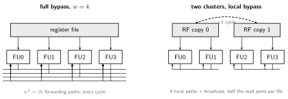
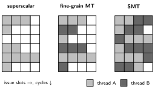

A superscalar processor can execute multiple
instructions per cycle. Fetch, decode, issue, and commit may have
different widths.
Out
of Order Execution and Register Renaming explains scheduling; this
note covers the structures needed to support width.
Superscalar execution can reduce CPI below 1. Achieved IPC depends on
instruction-level parallelism, dependencies, frontend supply, execution
resources, and memory behavior.
out-of-order superscalar
organization
In-Order Superscalar First
In-order superscalar issue selects several consecutive independent
instructions, subject to resource and pairing rules. A blocked
instruction limits progress past it; OOO issue can select later ready
work at greater hardware cost.
Frontend at Width
Fetch must deliver
useful instructions per cycle, every cycle:
A fetch group is one I-cache access; a taken branch mid-group wastes
the rest of the line, and a target entering mid-line wastes its start.
Fetch alignment plus ~1 taken branch per 5-8 instructions caps naive
fetch bandwidth below
.
Fixes: fetch across line boundaries (two banks), predict multiple
branches per cycle
(Branch
Prediction BTB indexed by fetch group), and a decoupled fetch queue
so the frontend runs ahead.
A trace cache stores decoded operations in dynamic
path order. A µop cache reuses decoded operations to
reduce decode work; it need not store dynamic traces.
Decode at width is where ISA encoding matters
(RISC-V
ISA comparison table): fixed 32-bit instruction boundaries simplify
parallel decode; x86’s 1-15 byte instructions need speculative length
decoding, so x86 cores split decoders into complex+simple sets and lean
on the µop cache. CISC instructions crack into µops; some RISC-like
pairs fuse (compare+branch) into one µop.
Backend at Width
Several structures become expensive as width
grows:
Register file ports:
read +
write ports; port count grows area roughly quadratically and hurts
access time, so wide cores bank or replicate the PRF
(Sequential
Circuits register file, multiplied).
Bypass network: every FU output to every FU input
is
wires and muxes, and long-wire delay can limit timing; wide machines
stage bypasses (same-cycle only within a cluster).
Issue queue wakeup-select: each broadcast tag must
CAM against every waiting operand, then select must arbitrate among all
ready instructions, and the loop must close in one cycle or dependent
instructions cannot issue back-to-back:
the wakeup-select loop
Reading Operands: Before
or After Issue
A width-independent design fork hides inside the issue queue:
when is the register file read?
Read before issue (Tomasulo’s heritage): read
available operands at dispatch and store the values in the
issue queue; missing ones arrive over the bypass. Fewer register-file
ports, but the queue becomes a second register file: values are written
into it, read out of it, and copied again, all of it energy. The natural
partner of ROB/rename-buffer renaming, where a value may otherwise have
to be chased from buffer to architectural file mid-flight.
Read after issue: the queue holds only operand
identifiers; the physical file is read after select. More
ports, but each value is read when needed from the PRF or bypass
network. The natural partner of the merged register file, and the modern
default.
Bypass and the Clustering
Ladder
Deep pipelines make the bypass worse than
suggests: a result must be forwardable from several pipeline
stages (ALU output, result drive, writeback) to catch consumers issued
1, 2, or 3 cycles behind, so each of the
paths is really several. Two standing simplifications: the FP/SIMD units
get a bypass network of their own (integer results almost never feed FP
directly), and the memory unit hangs off both.
Bypass depth and coverage are implementation choices. Removing a path
saves wiring but increases dependent-operation latency; independent work
may hide part of that cost.
When the bypass or the register file does threaten the clock,
designers climb the clustering ladder, each rung
cutting more wire at more IPC cost:

full bypass vs a clustered execution
engine
Cluster the bypass only: full forwarding inside a
cluster, none across; a cross-cluster value takes the long way through
the register file.
Replicate the register file (Alpha 21264): each
cluster owns a complete copy, kept coherent by broadcasting every
result; a value born in cluster 0 is usable in cluster 1 one cycle
later. Each copy needs only half the read ports, which is what let the
21264 hit its clock. The issue queue stays unified, with one arbiter per
cluster.
Distribute the issue queue and register file: no
copies at all: each cluster holds half the registers and its own queue,
instructions are steered to a cluster at rename, and
cross-cluster values move by explicit copy operations. Cheapest wires,
hardest scheduling problem: steering must keep dependent instructions
together while keeping the load balanced.
Commit at Width
Retire a consecutive prefix of completed, non-faulting instructions
at the ROB head, up to the commit width. A stalled head can block
younger completed work. Frequent branch recovery may use checkpoints;
rare exception recovery may instead walk the ROB or restore a committed
map.
Limits of ILP
A finite window, imperfect prediction, register capacity, and memory
latency limit useful ILP. A serial pointer chain cannot start its next
load until the previous address arrives. Increasing width helps only
when the machine can supply independent operations; energy and wiring
costs eventually outweigh the gain.
Compiler Scheduling
Loop unrolling exposes independent iterations and
amortizes branch overhead; multiple accumulators can break a reduction’s
dependency chain when the language’s arithmetic rules permit
reassociation. Software pipelining overlaps iterations
in a repeated schedule. Both increase live values and may cause register
spills or code growth. OOO hardware adapts to runtime latency; compiler
transformations change the work and dependencies available to it.
Simultaneous Multithreading
A single thread cannot fill a wide machine: vertical
waste (whole cycles idle, e.g. cache miss) and
horizontal waste (some of the
slots idle). Multithreading fills waste with other threads’ work:

issue-slot occupancy: superscalar vs
fine-grain MT vs SMT
Coarse-grain: switch threads on a long stall; fills
only vertical waste, costs a switch penalty.
Fine-grain: interleave threads frequently, often
every cycle; hides stalls but gives each thread fewer issue
opportunities.
SMT: select instructions from multiple threads in
the same cycle. Replicate architectural/thread state and track
per-thread recovery while sharing execution units, caches, and some
queues. Resource partitioning and throughput gains depend on the
design.
Costs: threads compete for caches and predictor state (a
cache-thrashing sibling can reduce performance), fairness needs explicit
policies, and shared structures can leak information through timing.
Historical Examples
Design
Illustrates
Pentium
in-order dual issue and pairing restrictions
Pentium Pro
speculative OOO execution and in-order retirement
Pentium 4
deep pipelines and a trace cache
Core 2
a different balance of width, depth, and power
When comparing widths, distinguish ISA instructions from µops and
decode width from issue or retire width.
Reliability
Shrinking transistors made a new failure class architectural:
soft errors, bit flips from cosmic-ray neutrons and
alpha particles that corrupt state without damaging hardware (rate
measured in FIT, failures per
hours; system rate depends on device technology, state size,
environment, and protection). The defenses are layered by cost:
Parity on structures whose contents can be
refetched: an I-cache or clean D-cache line that fails parity is simply
invalidated and re-read; detection alone suffices.
ECC (SECDED: single-error correct, double-error
detect, 8 check bits per 64 data bits) on anything holding the only
copy: dirty cache lines, register files, DRAM. Server DRAM adds
chipkill to survive a whole failed chip, and
scrubbing walks memory correcting single-bit errors
before a second one compounds them.
Redundant execution where the pipeline itself must
be trusted: lockstep cores compare retirement results cycle by cycle
(automotive/avionics), and TMR (triple modular
redundancy) votes three copies to mask an error outright, the
same majority trick at the system level that spacecraft use.
Speculation machinery gives OOO cores a cheap trick: an error
detected before commit (a parity-failing µop result, a mis-voted
structure) can often be handled by the existing
squash-and-replay
path, turning a potential silent data corruption into a transparent
retry.